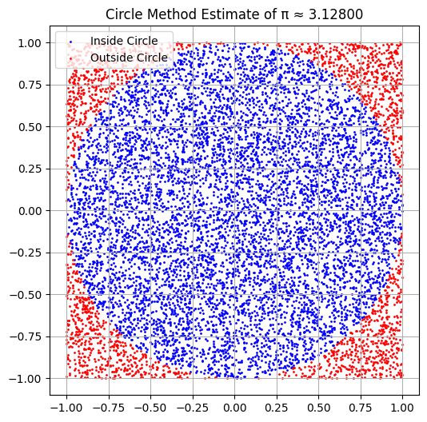
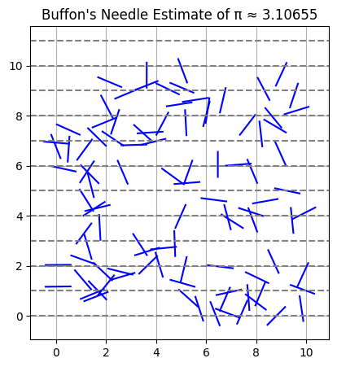
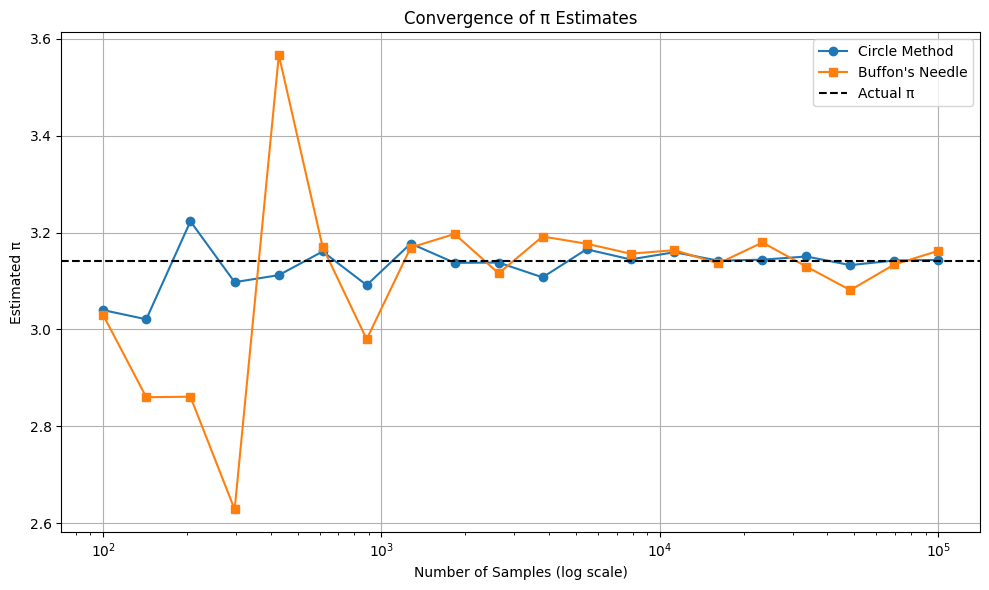

Problem 2
Estimating $ \pi $ Using Monte Carlo Methods
🎯 Motivation
Monte Carlo simulations are powerful tools that use randomness to solve problems or estimate values. One elegant example is estimating the value of $ \pi $ using probabilistic geometry. This document explores two such techniques:
- Circle-Based Monte Carlo Method
- Buffon’s Needle Method
Part 1: Estimating $ \pi $ Using a Circle
1. Theoretical Foundation
Consider a unit circle inscribed in a square of side length 2. The area of the square is:
The area of the unit circle is:
The ratio of the areas gives the probability that a random point in the square falls inside the circle:
2. Simulation
We generate random points $ (x, y) $ in the square $ [-1, 1] \times [-1, 1] $ and count how many fall inside the unit circle (i.e., satisfy $ x^2 + y^2 \leq 1 $).
- Number of Points: 10,000
- Estimated $ \pi $:
$$ \pi \approx 3.1816 $$
3. Visualization
Points inside the circle are shown in blue, while those outside are in red.

Part 2: Estimating $ \pi $ Using Buffon’s Needle
1. Theoretical Foundation
Buffon’s Needle problem estimates $ \pi $ by dropping a needle of length $ L $ on a surface with parallel lines spaced $ d $ apart. The probability of the needle crossing a line is:
Rearranged, we get:
2. Simulation
We randomly drop 10,000 needles of length 1 on a plane with lines spaced 2 units apart and count the crossings.
- Estimated $ \pi $:
$$ \pi \approx 3.06748 $$
3. Visualization
The plot below shows needle drops (in blue) with dashed horizontal lines indicating the line spacing.

📈 Convergence Analysis
We analyze how both methods converge toward $ \pi $ as the number of iterations increases (from 100 to 100,000).
Plot: Convergence of Estimates

Observations:
- Circle Method converges faster and is more stable.
- Buffon's Needle method is more erratic and converges slower due to geometric sensitivity.
- As the number of samples increases, both estimates approach the true value $ \pi \approx 3.14159 $.
🧠 Conclusion
| Method | Accuracy | Convergence Speed | Complexity |
|---|---|---|---|
| Circle Monte Carlo | High | Fast | Simple geometry |
| Buffon’s Needle | Moderate | Slow | Requires angle logic |
- For practical implementations, the circle-based method is generally preferred due to simplicity and faster convergence.